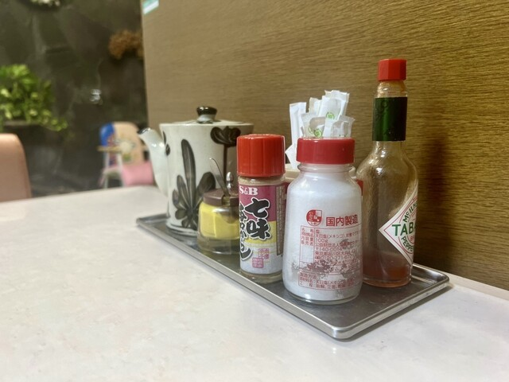

昭和の時代から沼津・下本町で暖簾を守る洋食店。デミグラスにカツを合わせた名物「カツハヤシ」は、世代を超えて通うファンの記憶の味です。
ふわとろのオムライス、ボリューム満点のカツ丼、サクッと揚がるエビフライ。どれも昔ながらの製法で、お昼時には行列ができる地元の食堂です。
将棋・藤井聡太棋士が「勝負メシ」に選んだ一皿としても話題に。
お昼時は混み合います。お電話でのご予約がおすすめです。
| 店名 | 千楽 本店 |
|---|---|
| 住所 | 静岡県沼津市下本町（沼津駅周辺） |
| 電話 | 055-962-1946 |
| 営業 | 昼 11:00〜14:00／夜 17:00〜20:30 ※参考 |
| 定休日 | 火曜 |
| 予算 | ¥1,000〜1,999 |